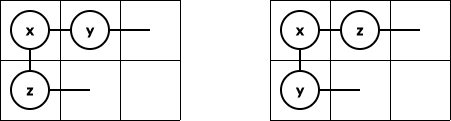
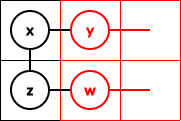
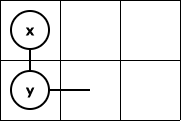
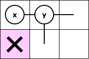
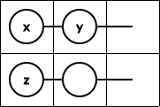
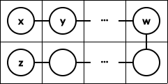
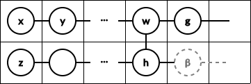
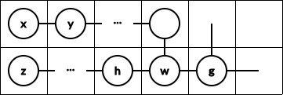
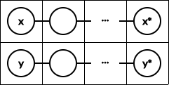
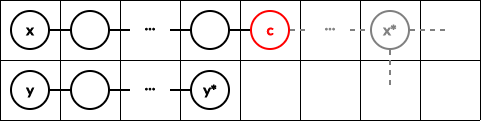

给定一棵 $n$ 个顶点的树 $T = \left( V, E \right)$，求有多少种将 $T$ 嵌入到 $2 \times n$ 的矩形的方案数，且满足 $1$ 在矩形的左上角。
形式化地，定义 $\mathcal S = \left\{ 1, 2 \right\} \times \left\{ 1, 2, \cdots, n \right\}$，求多少个单射 $\varphi : V \to \mathcal S$，满足 $\varphi \left( 1 \right) = \left( 1, 1 \right)$ 且对 $\forall \left( u, v \right) \in E$，均有 $\left\lVert \varphi \left( u \right) - \varphi \left( v \right) \right\rVert = 1$。
第一行包含一个正整数 $n$ ($n \leq 3 \times 10^5$)，表示树的点数。
接下来 $n - 1$ 行，每行两个正整数 $a_i, b_i$ ($1 \leq a_i, b_i \leq n; a_i \neq b_i$)，描述树上的一条边。保证这 $n - 1$ 条边恰好构成一棵树。
输出一行一个整数，表示嵌入的方案数 (单射 $\varphi$ 的个数) 模 $10^9 + 7$ 的结果。
显然，一个必要条件是，以 $1$ 为根时，每个顶点的子节点个数不超过 $2$。
考虑树形 DP，记以 $x$ 为根的子树的答案为 $f_x$，记 $d \left( x \right)$ 为 $x$ 的子节点个数 (不包含父节点，如果存在的话)。
$d \left( x \right) = 0$。
$x$ 为叶节点，显然 $\color {fuchsia} {f_x = 1}$。
$d \left( x \right) \geq 3$。
无解，$\color {fuchsia} {f_x = 0}$。
$d \left( x \right) = 2$。
设 $x$ 的子节点为 $y, z$。则 $y, z$ 有两种对称的安排，如下图：
以下不妨设 $z$ 在下面，$y$ 在右边 (即上图左) 。对于另一种情况，将 $y, z$ 交换后重复该操作即可。
$d \left( z \right) = 0$。
此时 $z$ 是叶节点，于是右边就是 $y$ 的天地了，且该状态可以看成原问题的一个子问题，因此 $\color {fuchsia} {f_x \gets_+ f_y}$。
$d \left( z \right) \geq 2$。
无解，$f_x$ 不变。
$d \left( z \right) = 1$。
此时 $z$ 的唯一子节点 (设为 $w$) 必须放在右边。于是转化为 $y, w$ 共占一列的状态 (如下图)。我们定义这种状态为 $parallel \left( y, w \right)$，最后一同处理。
$d \left( x \right) = 1$。
设 $x$ 的唯一子节点为 $y$。
$y$ 在 $x$ 下方。
$d \left( y \right) = 0$。
$y$ 为叶节点，显然 $1$ 组解，即 $\color {fuchsia} {f_x \gets_+ 1}$。
$d \left( y \right) = 1$。
设 $y$ 的唯一子节点 $z$ 必须放在右边，从而右边变成了 $z$ 的天地，故 $\color {fuchsia} {f_x \gets_+ f_z}$。
$d \left( y \right) \geq 2$。
无解，$f_x$ 不变。
$y$ 在 $x$ 右侧，且 $x$ 下方格子不使用。
可以发现右边就是 $y$ 的天地了，且状态相同，故 $\color {fuchsia} {f_x \gets_+ f_y}$。
$y$ 在 $x$ 右侧，且 $x$ 下方格子被某个顶点使用。
设以 $y$ 为根的子树中最浅的非 $1$ 度点为 $w$ (ps: 这个 $w$ 显然是良定义的，更严谨地说可以定义为所有非 $1$ 度点的 LCA，$w$ 一定存在，且有可能就是 $y$ [如果 $y$本身就不是 $1$ 度点的话])。
若 $w$ 是叶节点，则当且仅当 $w \neq y$ 且 $\operatorname{dist} \left( x, w \right)$ 是奇数时 $w$ 可以作为 "弯进来的" $z$，如果成立则 $\color {blue} {f_x \gets_+ 1}$。
否则 $w$ 一定是 $2$ 度点，根据 $w$ 在第一行还是第二行，分两种情况讨论：
$w$ 在第一行 (此时 $w$ 可以等于 $y$)。
设 $w$ 的子节点为 $g, h$。则 $g, h$ 同样有两种对称的安排。不妨设 $h$ 在下面，$g$ 在右边。
于是我们要求 $h$ 存在某棵子树恰好是一条长度为 $\operatorname{dist} \left( x, w \right) - 1$ 的链。这仍然可以通过寻找以 $h$ 的子节点为根的子树中最浅的非 $1$ 度点来判别。
特别地，如果此时 $d \left( h \right) = 2$，则 $h$ 的另一棵子树 $\beta$ 和 $g$ 会进入上述红色字所描述的 parallel 阶段，即 $\color {blue} {f_x \gets_+ \operatorname{parallel} \left( g, \beta \right)}$。
$w$ 在第二行 (此时需要保证 $w \neq y$)。
设 $w$ 的子节点为 $g, h$。则 $g, h$ 同样有两种对称的安排。不妨设 $h$ 在左边，$g$ 在右边。
于是我们要求以 $h$ 为根的子树恰好是一条长度为 $\operatorname{dist} \left( x, w \right) - 2$ 的链。和上面类似可判断。
而对于右半侧 $g$，可以发现转化为了原问题的子问题，因此如果成立则 $\color {blue} {f_x \gets_+ f_g}$。
接下来考虑对两棵子树 $x, y$，求 $\operatorname{parallel} \left( x, y \right)$。
设以 $x, y$ 为根的子树中最浅的非 $1$ 度点分别为 $x^*, y^*$，则可以分为两种情况：
$x^*$ 和 $y^*$ 在同一列。
此时，不难发现当且仅当 $d \left( x^* \right) = d \left( y^* \right) = 0$，即它们都是叶子时有一组解，否则无解。
$x^*$ 和 $y^*$ 不在同一列。不妨设 $x^*$ 在 $y^*$ 的右边。
此时，$y^*$ 必须是叶节点。然后我们在链 $x \leadsto x^*$ 上找到 $c$ 使得 $\operatorname{dist} \left( x, c \right) = \operatorname{dist} \left( y, y^* \right) + 1$，然后 $c$ 右边可以看成原问题的一个子问题，即 $f_c$。
最后是一些细节。
关于子树中最浅的非 $1$ 度点。
直接树形 DP，若 $v$ 是一度点，则它的答案等于唯一子节点的答案，否则就是自己。
关于如何寻找 $c$。
事实上你不需要写 $k$ 级祖先，因为 $x \leadsto x^*$ 链中间的所有点都是 $1$ 度点，因此它们在所有的 dfs 序上都是连续的一段区间，使用 dfs 序提取即可。
总时间复杂度 $O \left( n \right)$。
#include <bits/stdc++.h>
using std::cin;
using std::cout;
typedef long long ll;
typedef std::pair <int, int> pr;
const int N = 300054, M = N * 2, mod = 1000000007;
int n, E = 0;
int to[M], first[N], next[M];
int p[N], dep[N], d[N];
int near2[N], f[N];
int cnt = 0, o[N], id[N];
pr ch[N];
inline void add(int &x, const int y) {x += y - mod, x += x >> 31 & mod;}
inline void addedge(int u, int v) {
to[++E] = v, next[E] = first[u], first[u] = E;
to[++E] = u, next[E] = first[v], first[v] = E;
}
int parallel(int x, int y) {
int xd = near2[x], yd = near2[y], xl = dep[xd] - dep[x], yl = dep[yd] - dep[y];
if (xl == yl) return d[xd] < 1 && d[yd] < 1;
if (xl < yl) std::swap(x, y), std::swap(xd, yd), std::swap(xl, yl);
return d[yd] < 1 ? f[o[id[xd] - xl + yl + 1]] : 0;
}
void dfs(int x) {
int i, y, z, w, g, h, $, $$, c[3] = {0}; near2[x] = x, d[x] = 0, o[++cnt] = x, id[x] = cnt;
for (i = first[x]; i; i = next[i])
if ((y = to[i]) != p[x])
p[y] = x, dep[y] = dep[x] + 1, ++d[x], dfs(y);
if (d[x] < 1) {f[x] = 1; return;}
else if (d[x] > 2) {f[x] = 0; return;}
for (*c = 0, i = first[x]; i; i = next[i])
if (p[y = to[i]] == x) c[++*c] = y;
ch[x] = pr(y = c[1], z = c[2]);
if (d[x] == 1) {
if (!d[y]) add(f[x], 1);
else if (d[y] == 1) add(f[x], f[ch[y].first]);
add(f[x], f[y]);
w = near2[y];
if (d[w] < 1) add(f[x], w != y && (dep[w] ^ dep[x]) & 1);
else if (d[w] == 2) {
std::tie(g, h) = ch[w];
for (i = 0; i < 2; ++i) {
if (d[h] < 1);
else if (d[h] == 1) {
$ = ch[h].first, $$ = near2[$];
if (d[$$] < 1 && dep[w] - dep[x] == dep[$$] - dep[h]) add(f[x], f[g]);
} else {
$ = ch[h].first, $$ = near2[$];
if (d[$$] < 1 && dep[w] - dep[x] == dep[$$] - dep[h]) add(f[x], parallel(g, ch[h].second));
$ = ch[h].second, $$ = near2[$];
if (d[$$] < 1 && dep[w] - dep[x] == dep[$$] - dep[h]) add(f[x], parallel(g, ch[h].first));
}
if (w != y) {
$$ = near2[h];
if (d[$$] < 1 && dep[$$] - dep[w] == dep[w] - dep[x] - 1) add(f[x], f[g]);
}
std::swap(g, h);
}
} else {f[x] = 0; return;}
near2[x] = near2[y];
} else if (d[x] == 2)
for (i = 0; i < 2; ++i) {
if (d[z] < 1) add(f[x], f[y]);
else if (d[z] == 1) add(f[x], parallel(y, ch[z].first));
std::swap(y, z);
}
}
int main() {
int i, u, v;
std::ios::sync_with_stdio(false), cin.tie(NULL);
cin >> n;
for (i = 1; i < n; ++i) cin >> u >> v, addedge(u, v);
dfs(1), cout << f[1] << '\n';
return 0;
}
坑1：本题讨论较(ju)多，不要漏考虑情况。
坑2：在两棵子树要讨论两遍的时候，可以用 for (i = 0; i < 2; ++i) 然后处理完毕后交换 $y, z$ 来减小代码量。